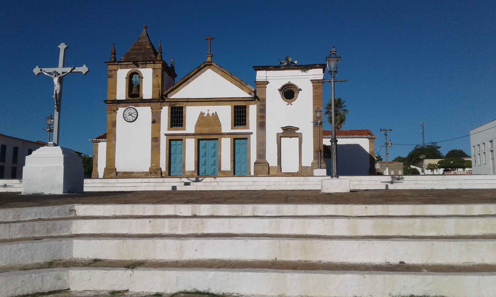
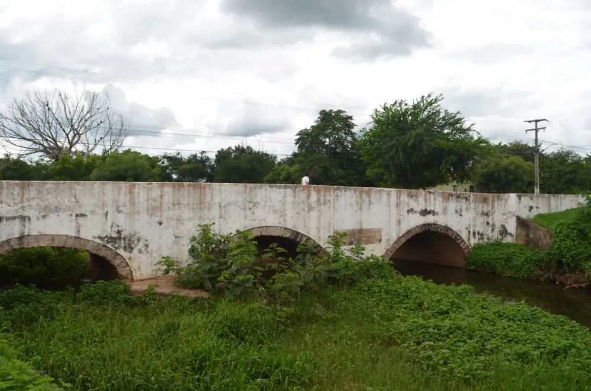

origem de Oeiras
-
A origem de Oeiras está ligada à expansão da pecuária nos sertões do atual estado do Piauí durante o século XVII.
-
Por volta da década de 1670, a região onde hoje é Oeiras já contava com fazendas — destaca-se a Fazenda Cabrobó, estabelecida por Domingos Afonso Mafrense, que teve papel importante no desenvolvimento inicial.
-
Em 1695 (algumas fontes citam 1696), foi construída uma capela dedicada a Nossa Senhora da Vitória no local, marcando o núcleo inicial de povoamento.
-
Em 1712, o povoado — conhecido como “Vila da Mocha”, por estar próximo ao riacho “Mocha” — foi elevado à vila e sede de concelho.

Nome e Significado
- Inicialmente o local era conhecido como “Vila da Mocha” por estar junto ao riacho Mocha.
- O nome “Oeiras” foi dado em 1761 para homenagear o conde português mencionado acima.

Importância e Legado
- Como núcleo mais antigo de povoamento organizado no Piauí, Oeiras é considerada o “berço” da colonização do estado.
- O conjunto urbano de Oeiras foi tombado pelo Instituto do Patrimônio Histórico e Artístico Nacional (IPHAN) em 2012, reconhecendo seu valor histórico e arquitetônico